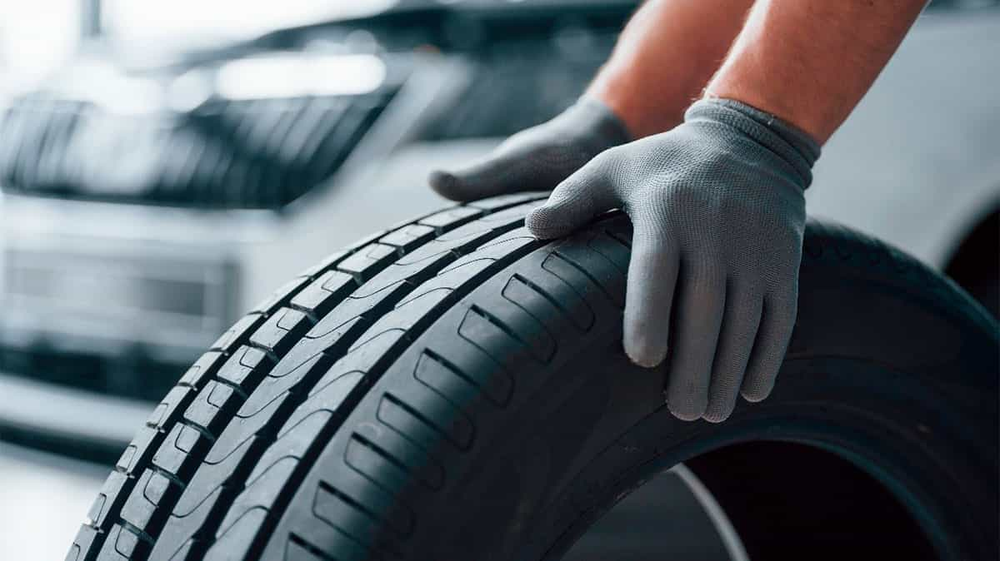
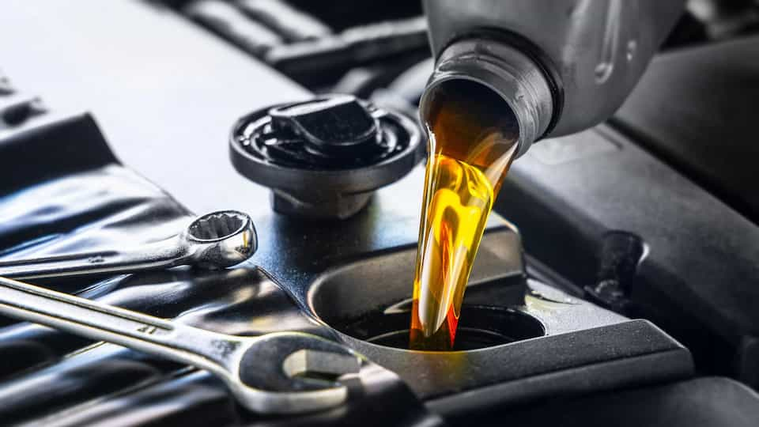
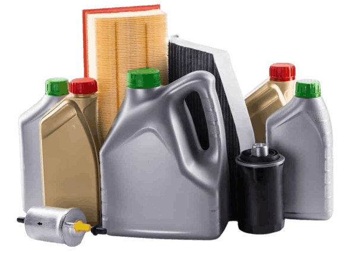
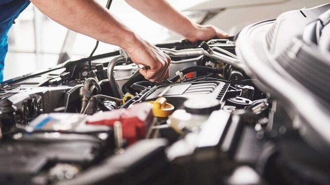
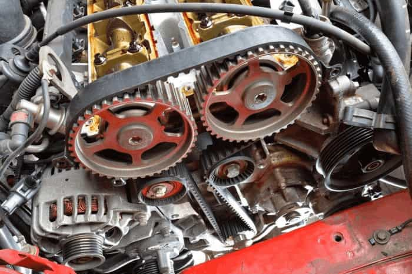

<div class="container-fluid mb-5">
    <div class="row mt-5 m-md-5">
        <h1>Consejos de mantenimiento</h1>
        <div class="row align-items-center mt-3">
            <div class="col-12 col-lg-8">
                <h2>Inspeccionar y mantener los neumáticos</h2>
                <p>
                    Saber cómo mantener la presión de los neumáticos de tu coche puede ayudar a reducir el desgaste de
                    los mismos y mejorar la estabilidad. Para revisar la presión de los neumáticos hay que comprobar la
                    presión recomendada por el fabricante, inflando o desinflando los neumáticos hasta el valor de
                    taraje. La mayoría de turismos ligeros tienen una presión de neumáticos comprendida entre 2 y 3
                    bares.
                </p>
                <p>
                    Un neumático sin las presión adecuada es un peligro para los ocupantes del vehículo, y también
                    afecta al
                    deterioro del coche. En caso de pinchazo, el riesgo aumenta si no tenemos la presión correcta en las
                    ruedas. Hay varios pasos preventivos que pueden tomarse para ayudar a evitar un reventón, por
                    ejemplo
                    realizar la rotación de los neumáticos cada 8.000 a 16.000 kilómetros y la observación de los mismos
                    para comprobar su estado.
                </p>
            </div>
            <figure class="col-12 col-lg-4 figure">
                
            </figure>
        </div>
        <div class="row align-items-center mt-3">
            <figure class="col-12 col-lg-4 figure order-2 order-lg-1">
                
            </figure>
            <div class="col-12 col-lg-8 order-lg-2 order-1">
                <h2>Cambiar el aceite</h2>
                <p>
                    Una buena praxis sería comprobar los niveles de aceite y su estado. Ello contribuye a mantener el
                    motor en buenas condiciones. Es aconsejable revisar el aceite periódicamente y cambiarlo siguiendo
                    las instrucciones que se indican en el manual de mantenimiento del vehículo.
                </p>
                <p>
                    Podrías cambiar el aceite tú mismo o llevarlo a un taller autorizado o a un centro especializado. Si
                    vas a hacerlo tú, asegúrate de seguir los pasos indicados en el manual, en particular, para la
                    extracción del líquido, llenado del depósito al nivel de aceite adecuado y llevar el aceite usado al
                    centro de reciclado.
                </p>
                <p>
                    También debes conocer qué tipo de aceite es el más idóneo para el motor de tu coche. Es interesante
                    considerar parámetros como la viscosidad del aceite, si utiliza aceite sintético o no sintético y el
                    kilometraje del coche en cuestión.
                </p>
            </div>
        </div>
        <div class="row align-items-center mt-3">
            <div class="col-12 col-lg-8">
                <h2>Comprobar los fluidos del coche</h2>
                <p>
                    Hay varios líquidos que deben mantenerse en los niveles apropiados para ayudar a mantener el coche
                    funcionando correctamente. Generalmente, se debe comprobar:
                </p>
                <ul class="list-group list-group-flush">
                    <li class="list-group-item">- Aceite de motor</li>
                    <li class="list-group-item">- Refrigerante</li>
                    <li class="list-group-item">- Líquido de dirección asistida</li>
                    <li class="list-group-item">- Líquido de frenos</li>
                    <li class="list-group-item">- Fluido de transmisión</li>
                </ul>
                <p>
                    Una fuga con cualquiera de estos fluidos puede afectar la forma en la que funciona tu coche. Si
                    detectas una fuga, puedes ser capaz de identificar el líquido por su color. Esto puede ayudarte a la
                    hora de determinar de dónde viene la fuga y, también, puede ayudar a acelerar el proceso de
                    reparación.
                </p>
            </div>
            <figure class="col-12 col-lg-4 figure">
                
            </figure>
        </div>
        <div class="row align-items-center mt-3">
            <figure class="col-12 col-lg-4 figure order-2 order-lg-1">
                
            </figure>
            <div class="col-12 col-lg-8 order-lg-2 order-1">
                <h2>Mantener el buen estado de las luces</h2>
                <p>
                    Una bombilla rota o quemada es un riesgo de seguridad y podría costarte más de un disgusto. Es
                    importante que conozcas cómo detectar y sustituir una bombilla fundida. Si una luz está fundida o no
                    se enciende, puedes cambiarla tú mismo o bien ponerte en manos de profesionales para determinar si
                    es la bombilla o el fusible lo que necesita ser reemplazado.
                </p>
                <p>
                    Los faros son elementos clave para la seguridad en tu coche. Considera tomar algunas medidas
                    adicionales para ayudar a mantenerlos brillantes, como limpiar las lentes, pulir o reemplazar los
                    cristales de los pilotos cuando comiencen a oscurecerse.
                </p>
            </div>
        </div>
        <div class="row align-items-center mt-3">
            <div class="col-12 col-lg-8">
                <h2>Realizar revisiones regulares</h2>
                <p>
                    Esta es una parte importante y obligatoria para el mantenimiento del coche. Algunas tareas
                    rutinarias de cuidado de automóviles, como las que te estamos listando, se pueden realizar en casa,
                    pero otras requieren de técnicos especializados. Lleva tu coche al taller si el piloto de control
                    del motor se enciende. Los profesionales pueden diagnosticar el problema a través del conector OBD
                    ubicado dentro del coche.
                </p>
                <p>
                    Un taller autorizado también podrá inspeccionar y reemplazar otros componentes básicos como el
                    alternador y los rodamientos de las ruedas. Seguir el programa de revisiones del fabricante
                    contribuye a asegurar un correcto mantenimiento del coche y prevenir posibles averías que
                    puedan surgir.
                </p>
            </div>
            <figure class="col-12 col-lg-4 figure">
                
            </figure>
        </div>
        <div class="row align-items-center mt-3">
            <figure class="col-12 col-lg-4 figure order-2 order-lg-1">
                
            </figure>
            <div class="col-12 col-lg-8 order-lg-2 order-1">
                <h2>Revisar las correas y cadenas de distribución</h2>
                <p>
                    Tener las correas y cadenas de distribución en buen estado puede ayudar a mantener tu coche en buen
                    estado de funcionamiento. Cada fabricante recomienda su cambio en función de los kilómetros o los
                    años. Por ello, revisa tu manual de mantenimiento. Por ejemplo, si una correa se rompe mientras
                    conduces, puede causar que muchos de los sistemas del automóvil fallen.
                </p>
            </div>
        </div>
    </div>
</div>